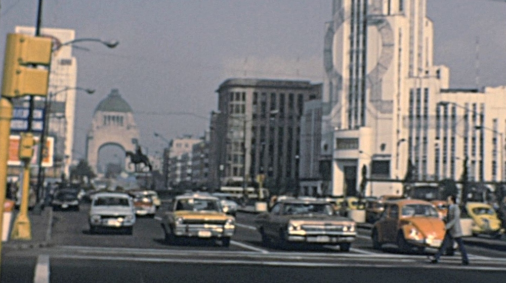
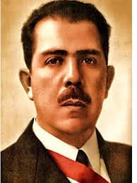
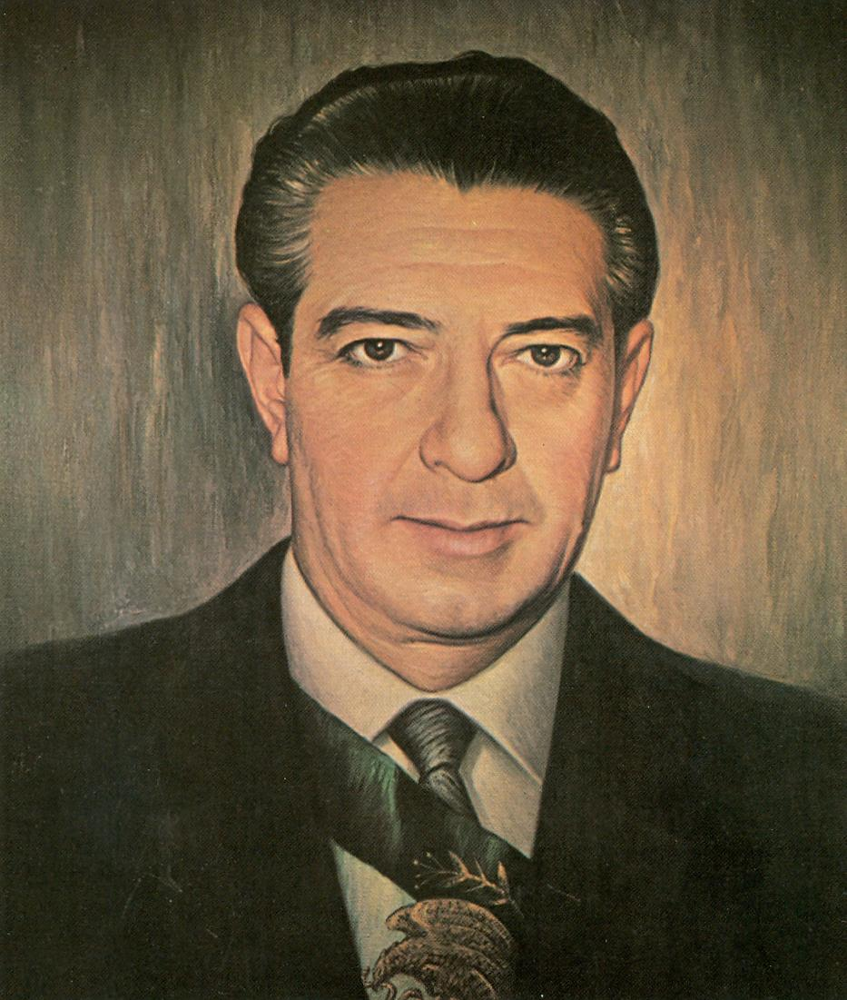
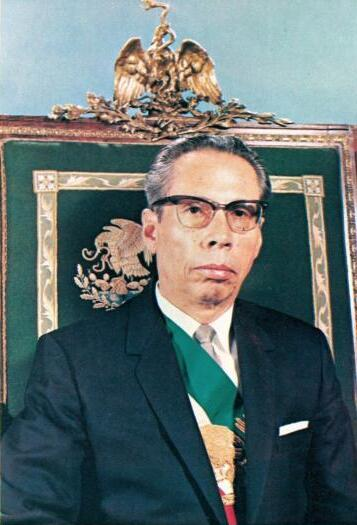

Hello, world!

Presidentes precursores del ISI
Hablaremos de presidentes más importantes antes de la epoca del ISI
el ISI es un modelo económico que ocurrió en méxico entre 1940-1970, su objetivo era proteger la industria nacional frente a las exportaciones,impulsar la prod nacional y dejar de comprar extranjero. contó con tres fases: industrialización ligera (1940-1950),pesada (1950-1970) y agotamiento (1970-1980).

Lazaro cardenas
Llegó al poder despues de expulsar a calles y romper la depenencia del maximato.
transformo el PNR en PRM (Partido de la revolución mexicana) y consolido la figura del presidente como absoluta.
impulso un reparto agrario masivo con 18 millones de hectáreas entregadas en ejidos y consolido la expropiación petrolera de 1938 donde el petroleo paso a ser propiedad nacional.
impulsó la creación de la CNC y fortaleció la CTM.
Adoptó la educación socialista y dio refugio a miles de civiles exiliados después de la guerra civil, se calcula que fueron entre 20,000-25,000 inmigrantes.

Adolfo López Mateos
Presidente de 1952-1958.
consolido el corporativismo logrando que el PRI estuviera más presente en los dindicatos y sectores sociales.
Defendió la soberania mexicana ante la OEA y se mostró como líder internacional del tercer mundo.
Creo el ISSTE en 1959 para dministrar programas de bienestar socialo y asegurar acceso a la salud pública.
implemento programas sociales como la educación pública, el aumento de salarios,libros de texto gratuitos, etc.
tambien fue el principal protagonista al reprimir movimientos sindicales que cuestionaban al régimen

Díaz Ordaz
Presidente de 1964-1970
Su gobierno tuvo el autoritarismo más rígido del presidencialismocon acciones como: centralizar el poder en el presidente, limitar libertades políticas, control sobre el PRI y los sindicatos.
Mantuvo el crecimiento económico estable y la inflación baja.
inauguró el metro en 1969.
Fue protagonista en la represión del movimiento estudiantil con la matanza de Tlatelolco donde cientos de jóvenes fueron asesinados o desaparecidos el 2 de octubre de 1968.